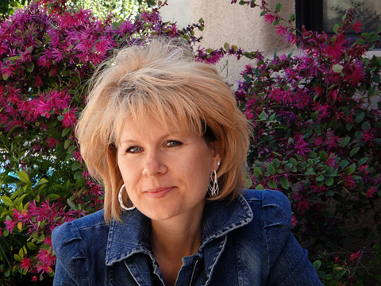

Best of Raw: Time to Vote for all Your Raw Favorites

This year I was nominated for The Best of Raw Awards, if you want to go and vote for me, please do. Even if you don’t vote for me, be sure to check out the other raw sites that were nominated. I am sure that you will find some great resources!
To vote, visit the following link and it will take you to the voting page, or just click on the button below, BestofRawFoods.com. It takes a second or two for the their page to fully load. Once it does, click on the “online blog” category, then scroll down a bit and look for my picture. I realized when I had to fill out their form that Nouveau Raw doesn’t have a logo! Tisk, risk. I need to work on that. :)
The creator and founder of Best of Raw, Laura Fox, says, “We have created the Best of Raw Awards to honor and celebrate those who are educating humanity about adding more raw organic plant foods to the diet to increase health, decrease our eco-footprint and raise our spirits”.
The winners of the Best of Raw Awards are going to be announced at the Raw Living Expo.
I appreciate your vote and your time. Many blessings, Amie Sue

© AmieSue.com